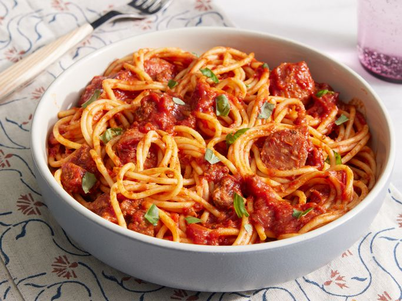

🍝 Favourite Pasta Recipe

About The Dish
This is my go-to recipe for a quick, nutritious mid-week family dinner. It's packed with fresh veggies, its so quick to make and of course, tastes delicious! Give yourself 20 minutes tops to whip up this hearty dish. Read on for the full method and ingredients list!
The Ingredients
- 500g Gluten Free Pasta
- 1 Onion
- 1 Box Tomato Passata
- 1 Carrot
- 1 Courgette
- 1 Aubergine
- 1 Stick Of Celery
- 1 Handful Of Mushrooms
- 400g Diced Chicken
- Salt & Pepper
- 1 Vegetable Stock Cube
- 1 Teaspoon Of Sugar
- 1 Teaspoon Of Dried Herbs
- 200g Grated Cheese
Method
- Fry off the diced chicken for 10 minutes in a dash of olive oil.
- While the chicken cooks, finely chop the onion, carrot, courgette, aubergine, celery and mushrooms. Then add to a pan with a dash of olive oil and fry on a low heat until softened.
- Bring a pan of water to the boil, add salt and add dried pasta. Simmer for the 10-12 minutes (depending on the packet instructions).
- Once the vegetables are ready, add the pasatta, sugar, seasoning and stock cube. Allow to simmer until the pasta is cooked.
- Optional - once cooked, if you remove the chicken, you can blend the vegetables for a child-friendly sauce!
- Serve your pasta with grated cheese, and a side of salad and garlic bread. Enjoy!